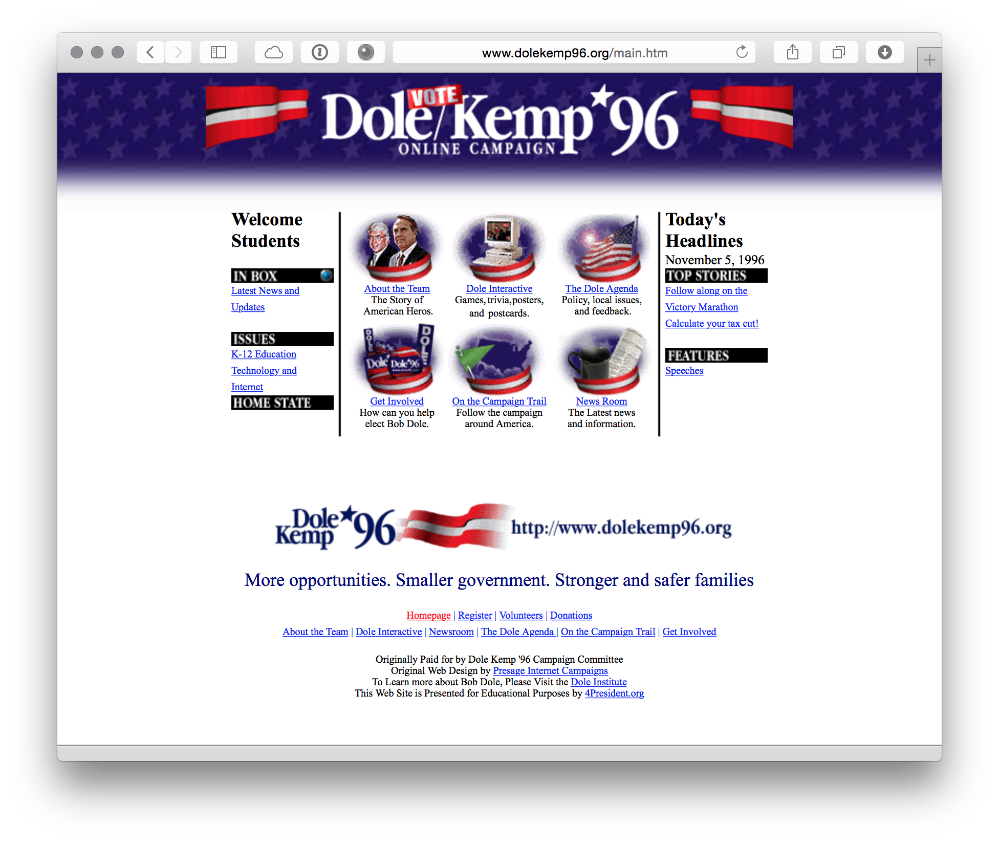
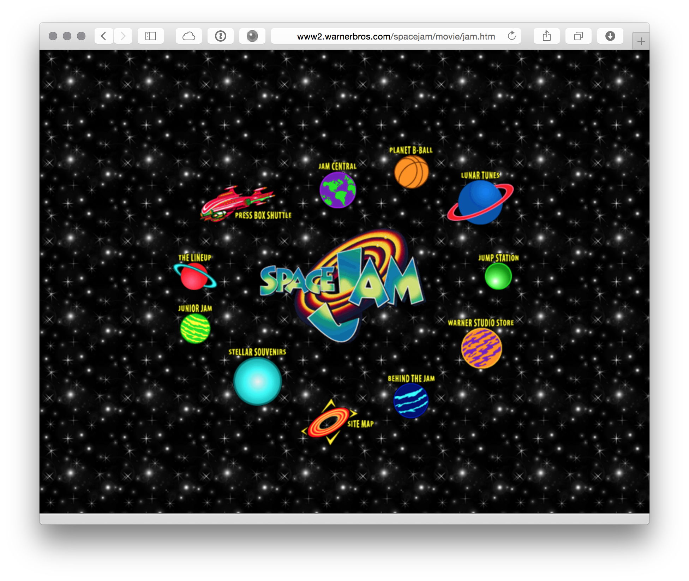
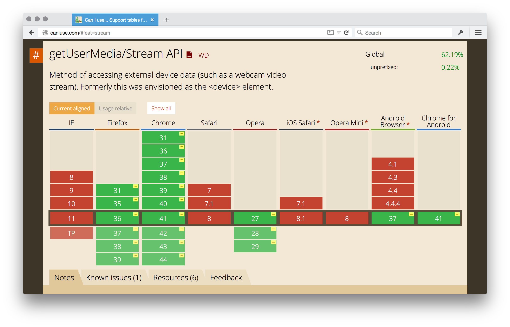
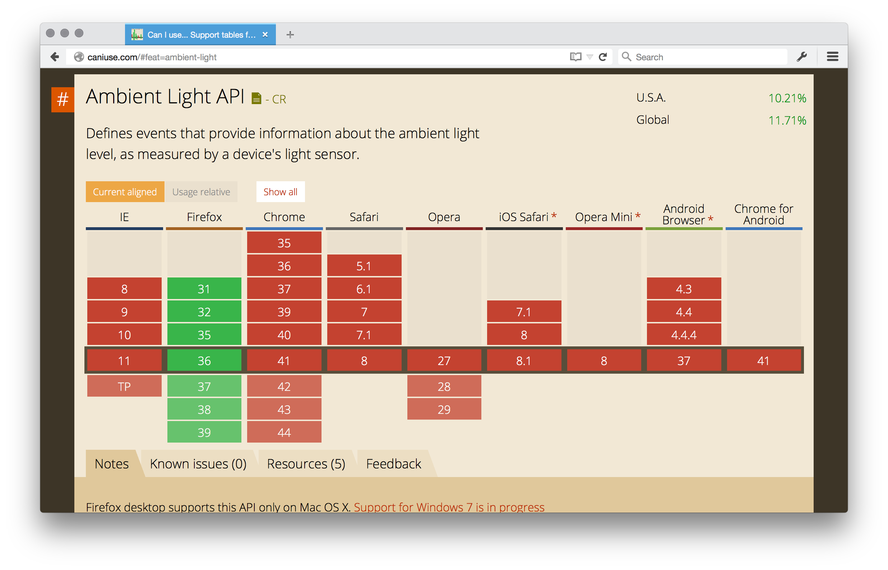
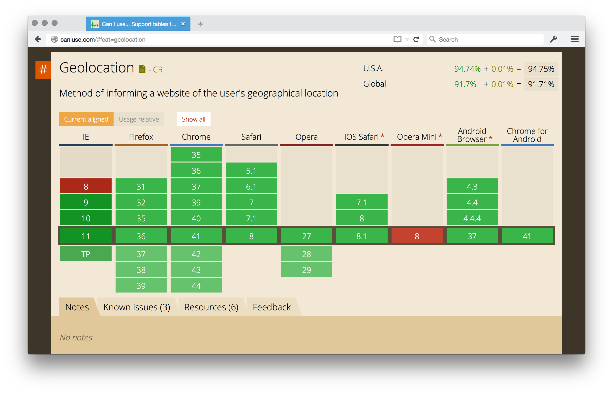
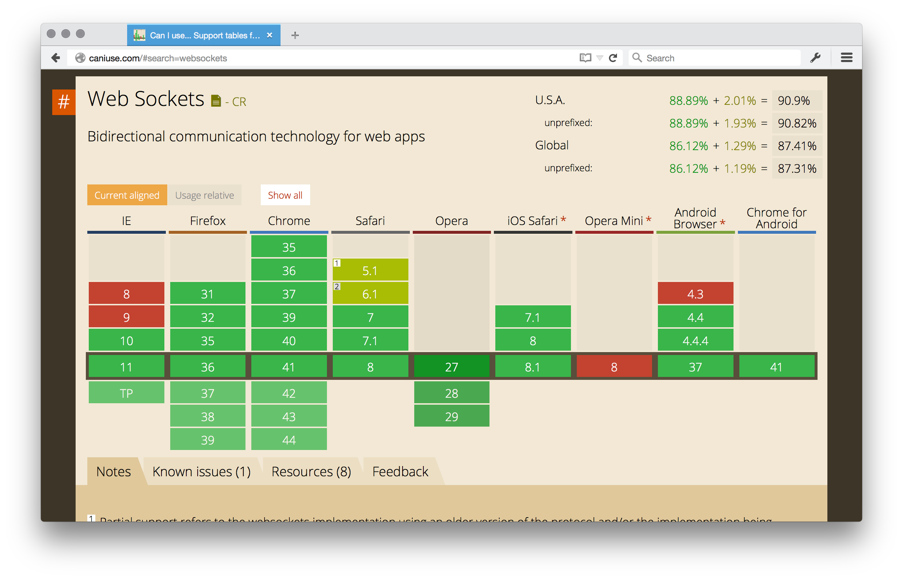
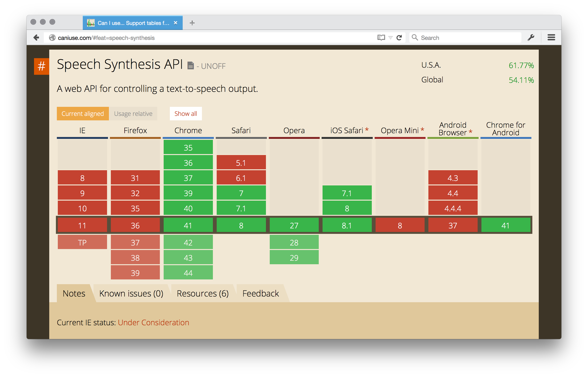
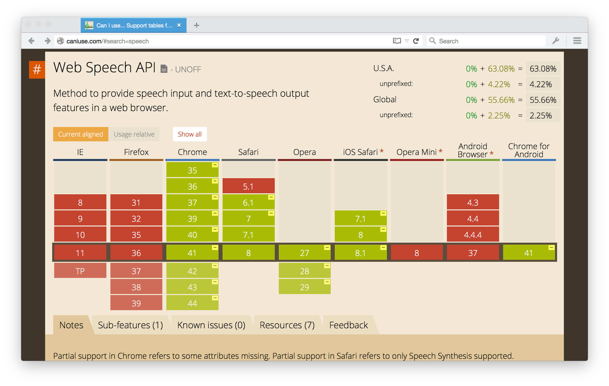
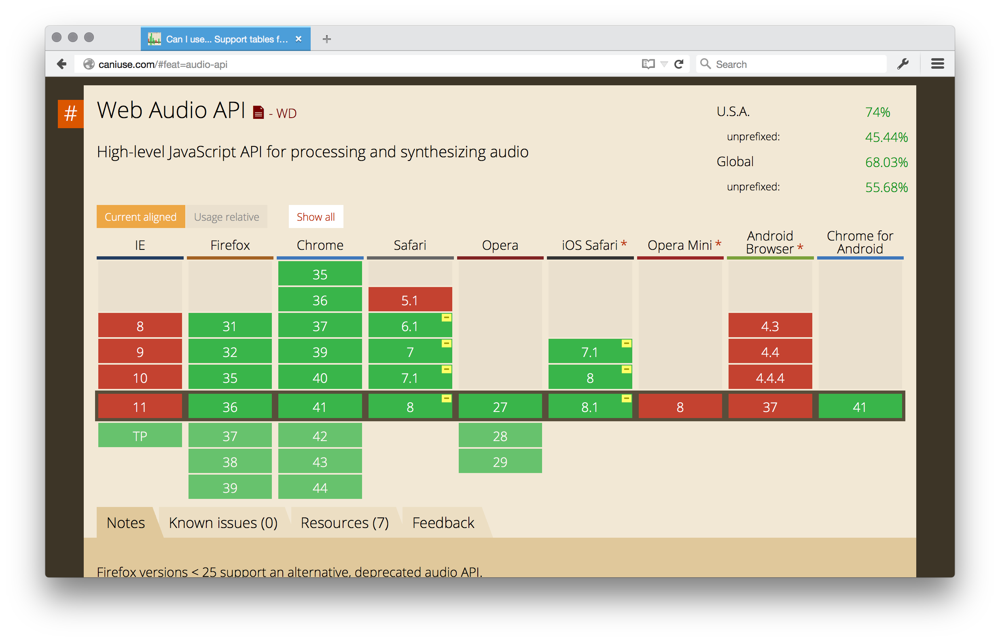
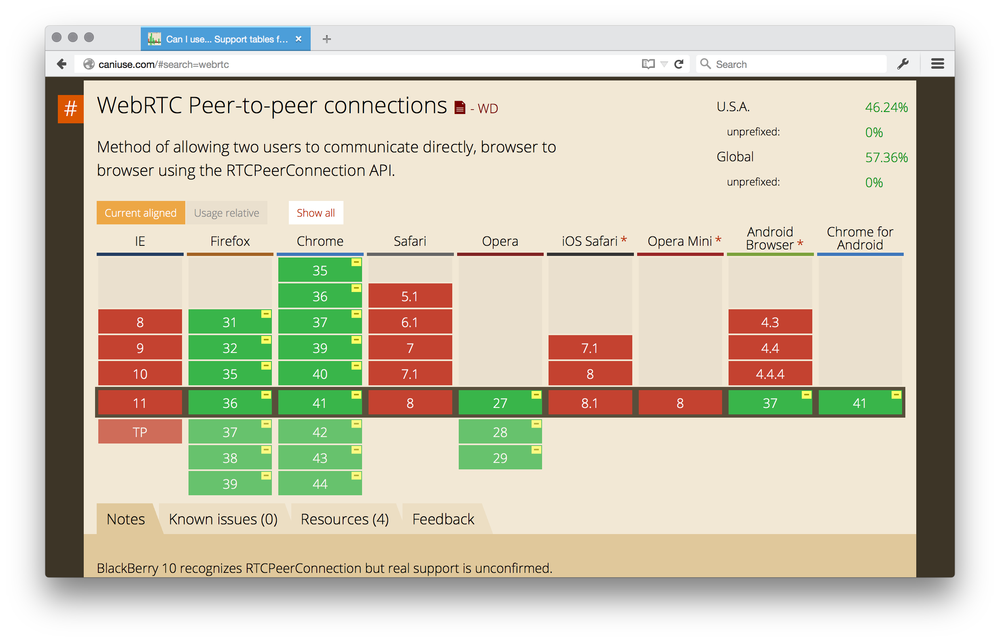

The Web Can Do That?
Hi.
I am an instructor at the Turing School of Software and Design.
- Hire our students
- Come mentor our students
- Become one of our students
Introduction
Once upon a time, we visited web pages.
Web pages were different than normal pages.
Web pages were super cool because they had hyperlinks.
Hyperlinks.
Hyperlinks allowed you to cybersurf the net.
Images came later. As did MIDI and animated GIFs. Even Flash.
The web has come a long way over the last twenty some on years.
A long, long way.
The browser has a whole bunch of lesser known, but super awesome, APIs.
My goal tonight is to encourage you to explore some of these APIs and make some cool things.
The Flow of the Evening
We'll look at some examples from across the web.
We'll also take a look at some small code samples to get you started.
Even if you're new to development, this is a great, fun way to get started.
On JavaScript
Because it's the browser, the code will be in JavaScript, but you shouldn't have to be an expert in JavaScript to get started.
Browser Support
Support for some of these technologies is a mixed bag.
We'll talk about support for each API as we go along.
Follow Along at Home
Repository: stevekinney/web-api-demos
Live Demonstrations: fullstack-denver.herokuapp.com
Get User Media
What is it?
It's an API that allows you to get… media… from the… user.
So, we're talking about the camera, the microphone, and even screen sharing.
Can I use it?
Some Examples in the Wild
How do I use it?
Let's do something simple: Let's take a video element without a src and stream our smiling faces into the element.
The Ambient Light API
What is it?
The Ambient Light API uses the light sensor on your Mac and reports back the current amount of light in the room.

Can I use it?
Only in Firefox and only on OS X.
How do I use it?
Let's create a simple application that changes the color of the background based on the amount of light.
Geolocation API
What is it?
Can I use it?
The alternatives and why they're terrible.
How do I use it?
Let's stalk ourselves.
WebSockets
What is it?
Can I use it?
Some Examples in the Wild
- Word2 (Now Defunct)
How do I use it?
Let's make a little chat room.
Web Speech Synthesis API
What is it?
The Web Speech Synthesis API will take some text and dictate it to you.
Can I use it?
Only in the WebKit/Blink browsers.
How do I use it?
Web Speech Recognition API
What is it?
The Web Speech Recognition API will transcribe your dictation.
If you've ever used Dragon Natural Speaking (or even Siri), you probably know what I'm talking about.
Can I use it?
Only in the WebKit/Blink browsers.
Let's Play a Game
How do I use it?
Let's talk to our computers, as opposed to ourselves.
Web Audio API
What is it?
The Web Audio API let's you play sound clips, but it also has a built in synthesizer for creating your own music.
Can I use it?
Some Examples in the Wild
How do I use it?
Let's build a theremin.
WebRTC
What is it?
WebRTC is decentralized, peer-to-peer video and voice chat.
The cool thing is that there is no server in middle.
Can I use it?
Some Examples in the Wild
How do I use it?
Let's use a library to create a little video chat application.
Some Other Technologies
WebGL
WebGL (Web Graphics Library) is a JavaScript API for rendering interactive 3D computer graphics and 2D graphics within any compatible web browser without the use of plug-ins.
WebVR
WebVR is an experimental Javascript API that provides access to Virtual Reality devices, such as the Oculus Rift or Google Cardboard.
In Conclusion
The browser can do a lot more than display pages with links.
A Challenge To You
Make something cool and send a pull request to the README.md with a link to your experiment.